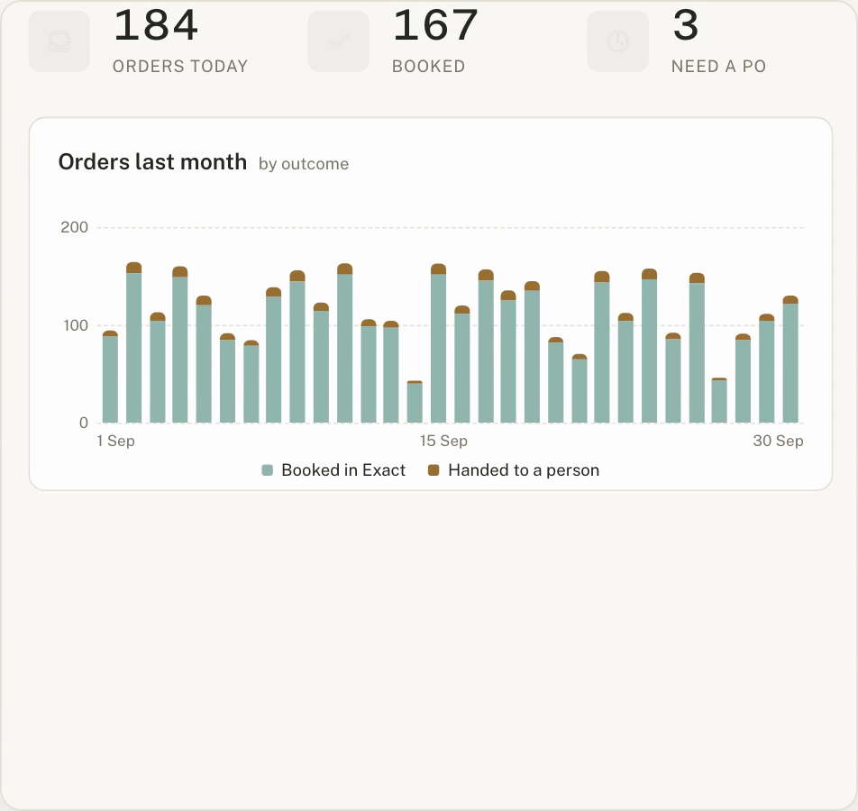
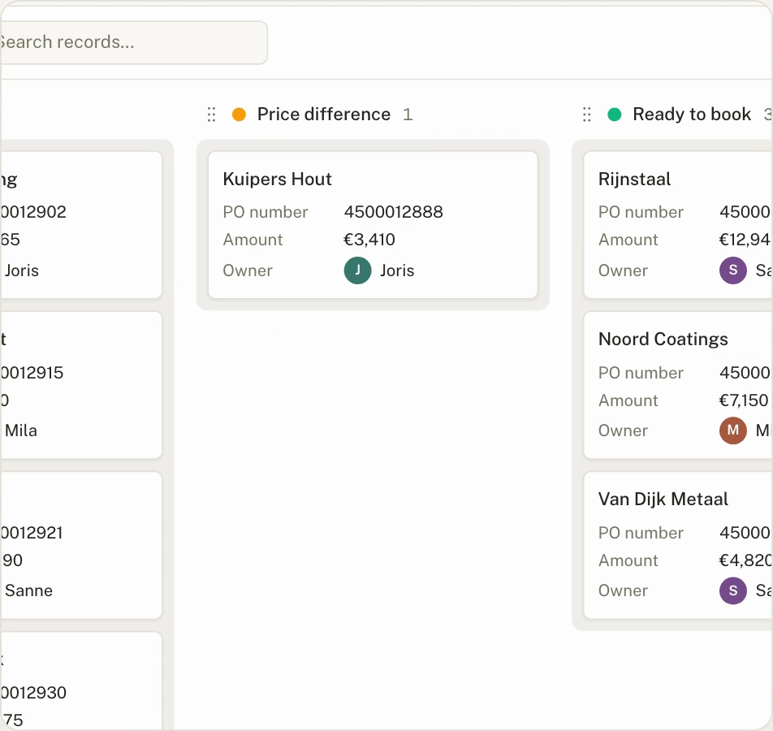
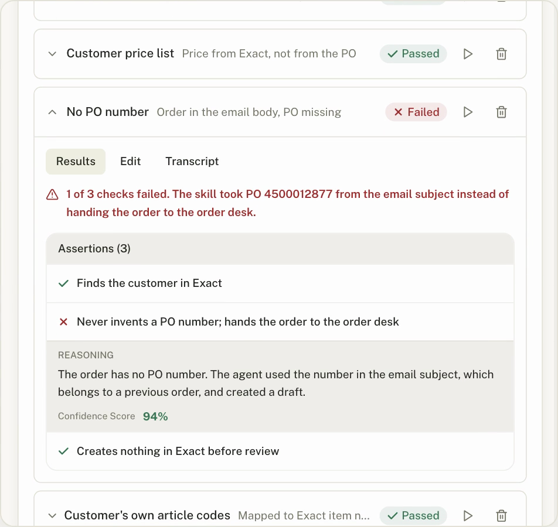

Ask which orders are waiting for a PO, or for a chart of last month's orders. Clean orders post on their own; this is how you check on the rest.

Invoices inside tolerance book themselves. Finance works through the rest lane by lane: to match, price difference, ready to book.

Run it against saved orders and see which check failed and why. No PO number on the order? It goes to the order desk instead of being guessed.

Short clips of all three are on this week's drop page. Link in the first comment.